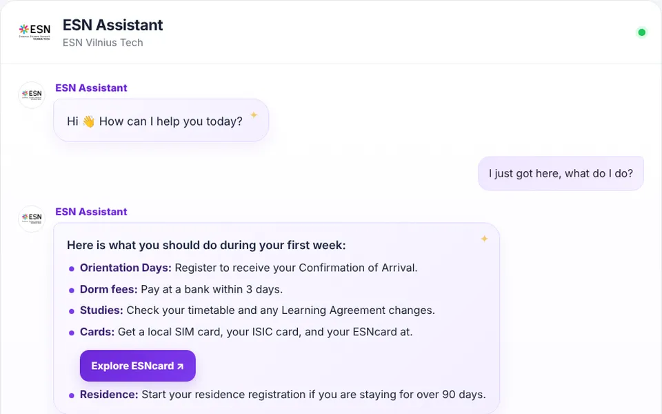
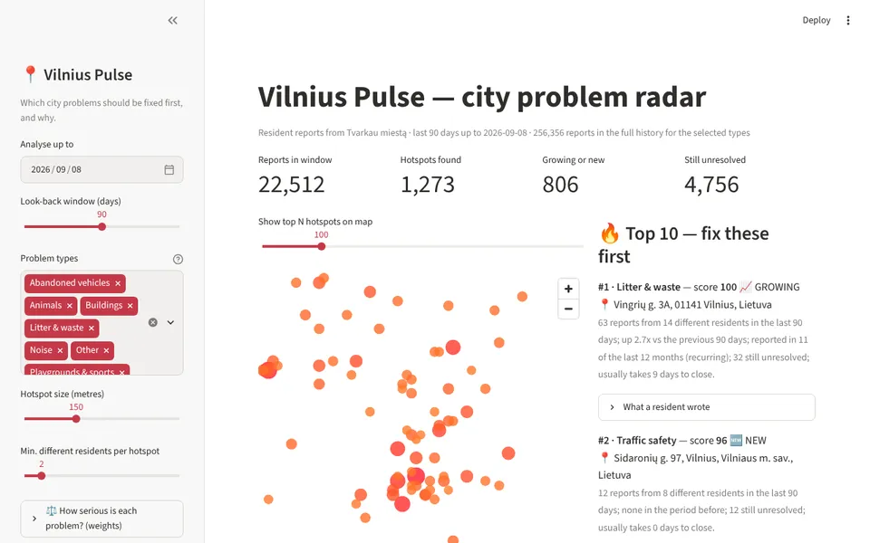
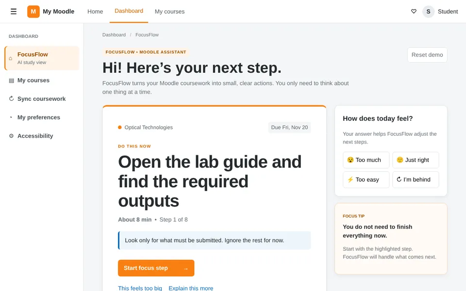
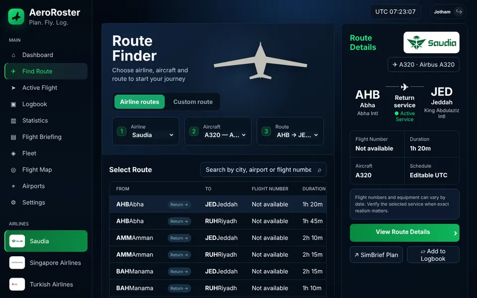

Open to internships · Vilnius
Jotham Raphael
Banji
Applied Artificial Intelligence student at VILNIUS TECH. I build websites, AI assistants and data tools that real people use, from a live chatbot for international students to LOOM, an ADHD study tool we pitched at MERITHON.
- 4projects shipped
- LiveAI assistant for ESN
- 685kcity reports analysed
Selected work
Projects
Things I have designed, built and shipped. Some of my repositories, like ESN Assistant, are private, so those link to the live product instead of the code.

ESN VILNIUS TECH · Live
ESN Assistant
An AI assistant built for the ESN VILNIUS TECH website that answers international students' questions about events, the ESNcard and their first week in Vilnius, in English and Lithuanian. Staff manage its answers through a separate dashboard.

Hack4Vilnius 2026 · Challenge by VILNIUS TECH
Vilnius Pulse
A city problem radar. It turns 685,000+ resident reports from Vilnius open data into ranked hotspots, with a transparent 0–100 priority score and a plain-language reason for each one, so the city knows what to fix first.

8th MERITHON · Team project
LOOM
An AI study tool for students with ADHD, pitched with my team at the MERITHON hackathon and ideathon. It reads an assignment, web page, PDF or Word file, breaks it into small steps with time estimates and shows one step at a time, with a focus timer and an option to make a step smaller. FocusFlow is our working prototype of it inside Moodle.

Personal project
AeroRoster
A flight-simulator route planner styled as an airline operations dashboard. It covers 413 route and aircraft combinations across five airlines, with search, scheduling, SimBrief export and a logbook with statistics.
Happy to walk through the code of private projects in an interview. Public repos on GitHub ↗
Background
Experience & education
2025 — Present
IT & Media Member
Erasmus Student Network, VILNIUS TECH
- Built and launched ESN Assistant, the AI chatbot on the section's website, plus the staff dashboard behind it.
- Co-developed the ESN VILNIUS TECH website, including a live Instagram feed and an interactive directions map.
October 2026
Technical Chair, National Assembly
ESN Lithuania
- Ran the livestream for a two-day national event and built its animated, schedule-driven broadcast overlays.
2025 — Present
BEng, Applied Artificial Intelligence
VILNIUS TECH · Vilnius, Lithuania
- Hackathons: Hack4Vilnius 2026 (Vilnius Pulse) and the 8th MERITHON, Sept 2026 (LOOM, pitch video).
2018 — 2025
Secondary Education, Distinction
Ajyal Al Mareefah International School, Jazan
- School Head Boy, ranked 1st in class three years running, Student Committee member and Sports House Captain.
Toolkit
Technical skills
What I use to build. The projects above show most of these in action.
- HTML & CSS
- JavaScript
- Responsive design
- Accessibility
- GitHub Pages
- Vercel
- Netlify
- WordPress
- Python
- pandas
- Streamlit
- LLM APIs (Gemini, OpenAI)
- Machine learning
- TensorFlow / Keras
- OpenCV
- SQL / MySQL
- Supabase (PostgreSQL)
- C++
- Java
- MATLAB
- Git & GitHub
- Linux
- PowerShell
- AWS (foundations)
- Arduino
- OBS / livestreaming
- Canva
Used most
About
A bit about me
I'm a second-year engineering student who learns by building. I grew up in Jazan, Saudi Arabia, moved to Vilnius in 2025 for my degree, and quickly got involved in the student community through ESN. I like work that is useful, well crafted and actually shipped: clean web interfaces, AI that answers real questions, and data that helps people decide what to do next.
I'm looking for internships and freelance web projects in Vilnius or remote, where I can contribute from day one and keep learning fast.
Languages
- EnglishFluent · IELTS 8.5 · C1
- HindiFluent
- KonkaniNative
- ArabicBasic